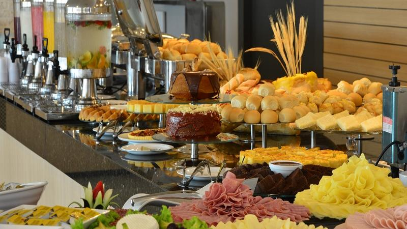
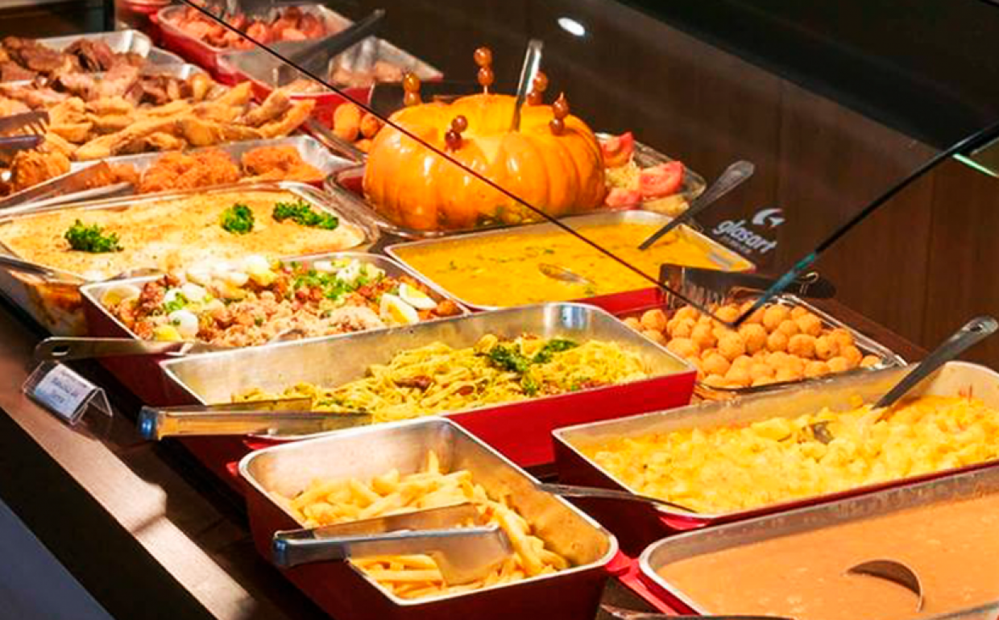
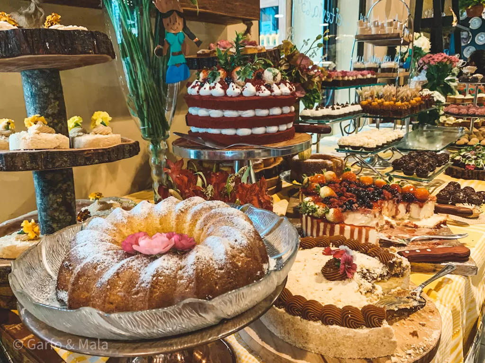

Cardápio

Café da Manhã:
- Café fresco com leite
- Pães caseiros (integral, francês, de milho)
- Queijos e presuntos regionais
- Bolo de fubá com goiabada
- Frutas da estação (mamão, banana, melancia)
- Iogurte natural com granola
- Ovos mexidos com ervas frescas
- Sucos naturais (laranja, abacaxi, acerola)
Almoço:

- Feijoada completa com arroz, couve, farofa e laranja
- Frango caipira com polenta e quiabo
- Peixe grelhado com molho de ervas
- Saladas frescas (alface, rúcula, tomate, cenoura)
- Purê de mandioca com queijo coalho
- Sobremesa do dia (pudim, doce de leite, ambrosia)
Lanche da Tarde:
- Bolo de cenoura com cobertura de chocolate
- Café expresso ou chá de ervas
- Biscoitos caseiros (sequilhos, rosquinhas)
- Tábua de queijos e frutas secas

Jantar:
- Truta na manteiga com alcaparras
- Risoto de cogumelos com parmesão
- Legumes grelhados (abobrinha, berinjela, pimentão)
- Salada verde com molho de mostarda e mel
- Torta de maçã com sorvete de creme
Observações:
Todos os pratos são preparados com ingredientes frescos e locais, sendo sujeito à mudanças.
Oferecemos opções vegetarianas e veganas mediante solicitação.
Aproveite a vista panorâmica das montanhas enquanto desfruta de sua refeição!
🌿🍽️ Bom apetite! 🍽️🌿